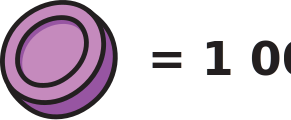

1 974
4 111
4 000 + 200 + 10 + 1
4 000 + 300 + 20 + 2
4 000 + 100 + 10 + 1
1 111
13 974
10 000 + 3 000 + 900 + 70 + 4
20 000 + 4 000 + 900 + 70 + 4
10 000 + 3 000 + 900 + 60 + 5
2 413
1 964
2 000 + 800 + 60 + 4
1 000 + 900 + 60 + 5
1 000 + 900 + 60 + 4
10 974